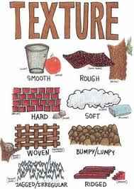

WHAT IS VISUAL ART??
ELEMENTS
EQUIPMENTS
ELEMENTS OF ART
Elements of art are stylistic features that are included within an art piece to help the artist communicate. The seven most common elements include line, shape, texture, form, space, colour and value, with the additions of mark making, and materiality.
Artists manipulate these seven elements, mix them in with principles of design, and compose a piece of art. Not every work of art contains every one of these elements, but at least two are always present.
LINE
Art would be sunk without line, sometimes known as "a moving point." While line isn't something found in nature, it is absolutely essential as a concept to depicting objects and symbols, and defining shapes.
These marks span a distance between two points and can be straight or curved. In visual art, lines don’t only need to be made with marks and outlines.
They can be used to create shape and form, as well as give a sense of depth and structure. Lines are the foundation of drawing and are a powerful tool unto themselves. Using different types of lines—continuous, broken, vertical, jagged, horizontal—drastically changes the psychology of an artwork, impacting the viewer greatly.
SHAPE
Shapes can be used to control how we perceive a composition. For instance, triangles can help draw the eye to a particular point, while circles represent continuity.
TEXTURE
Texture is another element, like form or space, that can be real (run your fingers over an Oriental rug, or hold an unglazed pot), created (think of van Gogh's lumpy, impasto-ed canvases) or implied (through clever use of shading).
Texture is an element of art that also plays to our sense of touch. It’s defined as a description of the way something feels or looks like it would feel. Sometimes we’re speaking about an actual texture that can be felt.

FORM
When a shape acquires depth and becomes three-dimensional, then it takes on form. Cylinders, pyramids, and spheres are some of the more common forms, though they can also be amorphous. In sculpture, form is of the utmost importance, though it can easily be introduced into drawing and painting using 3D art techniques.
COLOR
Color is often the whole point for people who are visual learners and thinkers.
By working with hue, value, and intensity—three building blocks of colors—artists can tap into a wide range of emotions. There’s nothing that changes an artwork’s emotional impact more than color.
SPACE
This element of art can be manipulated based on how an artist places lines, shapes, forms, and color. The placement of these other elements creates space. Space can be either positive or negative. Positive space is an area occupied by an object or form, while negative space is an area that runs between, through, around, or within objects.
VALUE
Related to color, value is the lightness and darkness of a color. The lightest value is white and the darkest value is black, with the difference between them defined as the contrast. Playing with value can not only change certain forms, but also influence the mood of the artwork.